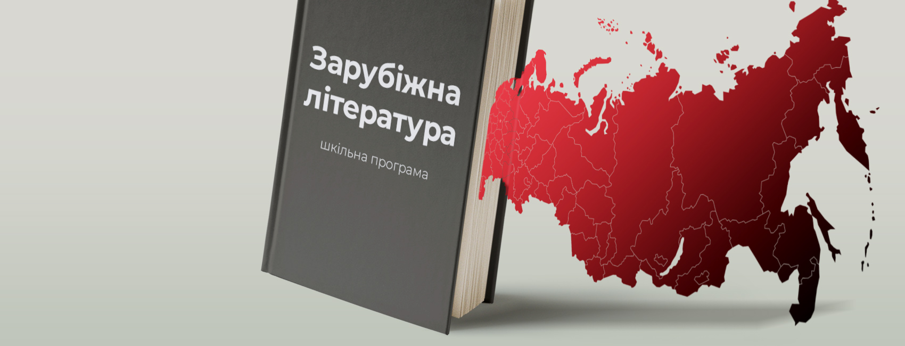
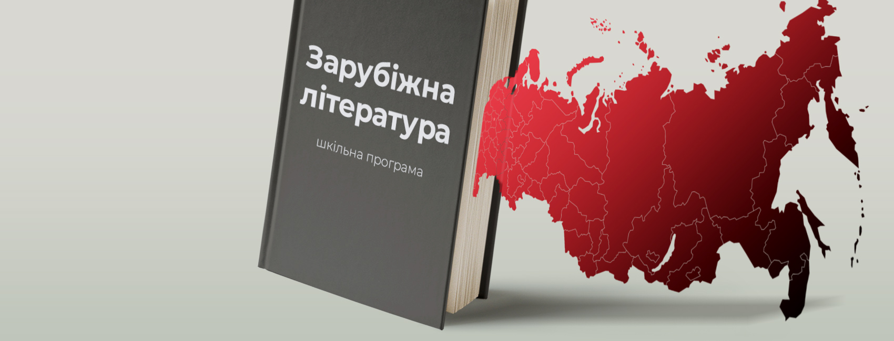

Зарубіжна література- цу круто
В зарубіжній літературі є багато цікавих авторів наприкла:Пушкін,Кафка,Ремаркм і багато інших
 

Факти про зарубіжну літературу:Цікавий факт, що за творами В.Шекспіра було знято найбільшу кількість фільмів і багато інших фактів